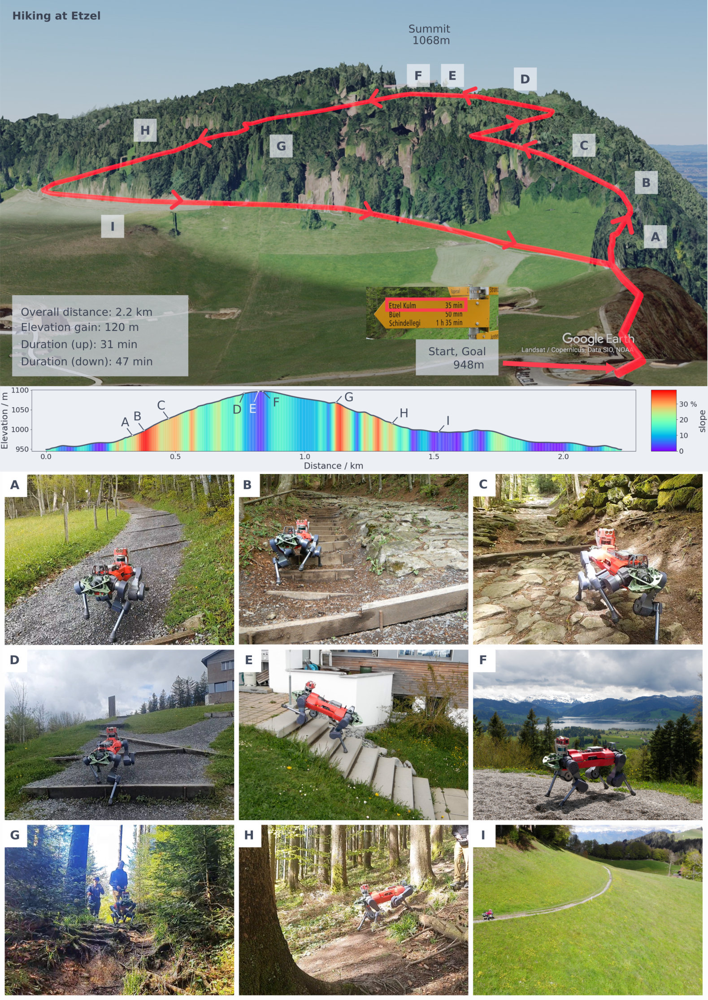
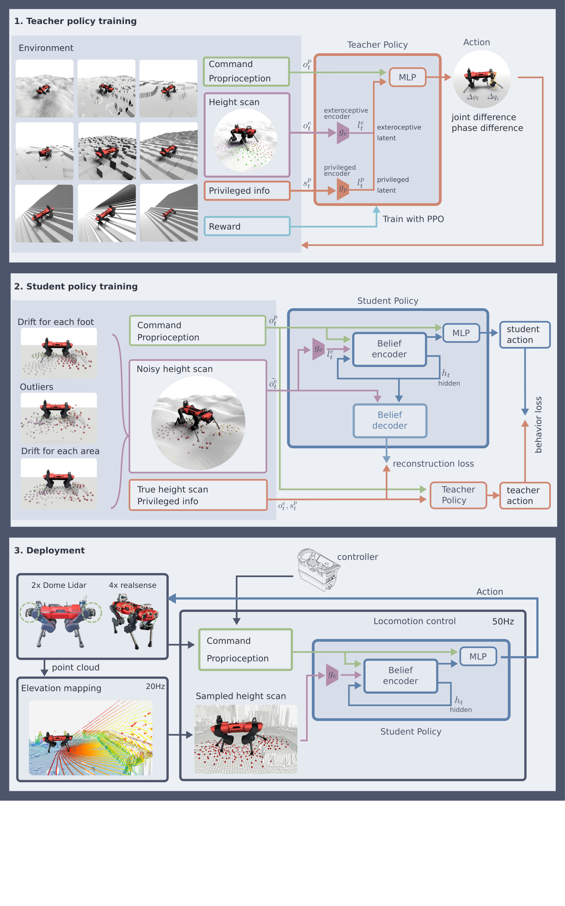
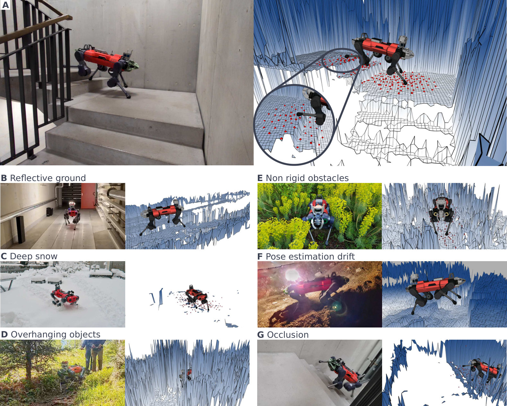
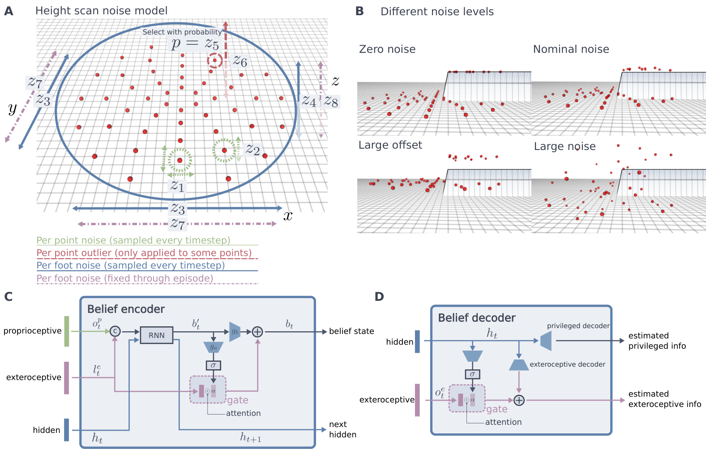
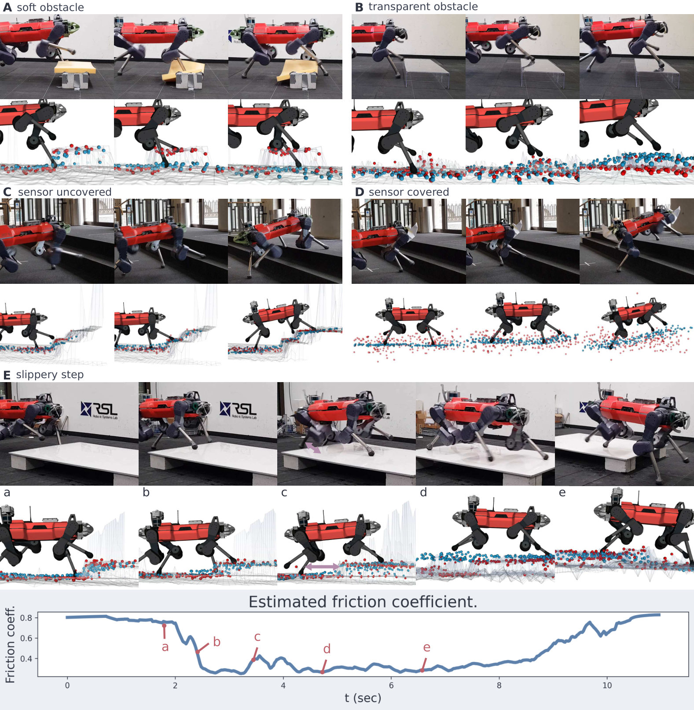
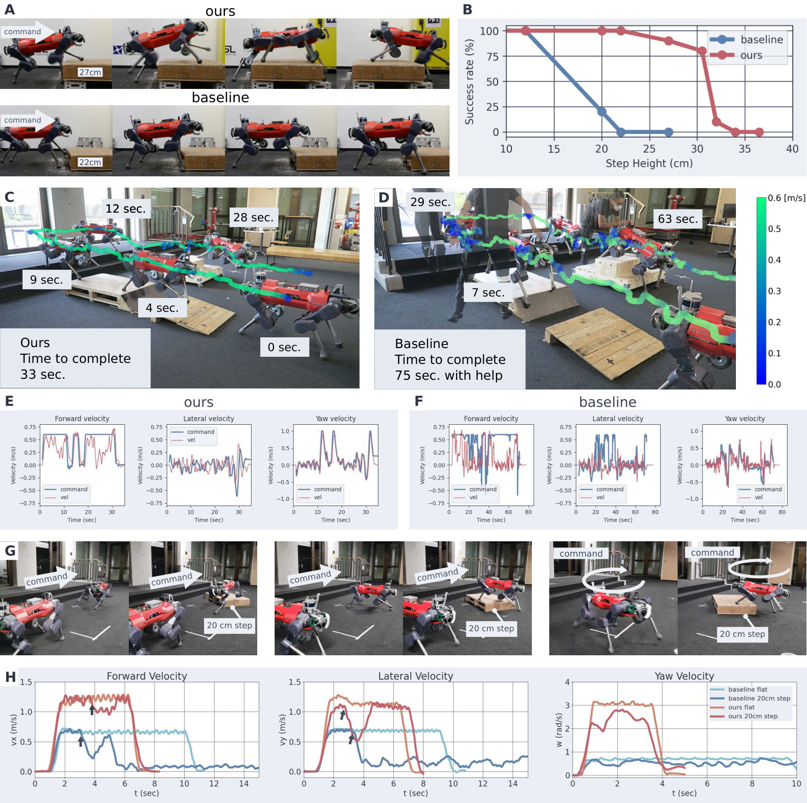
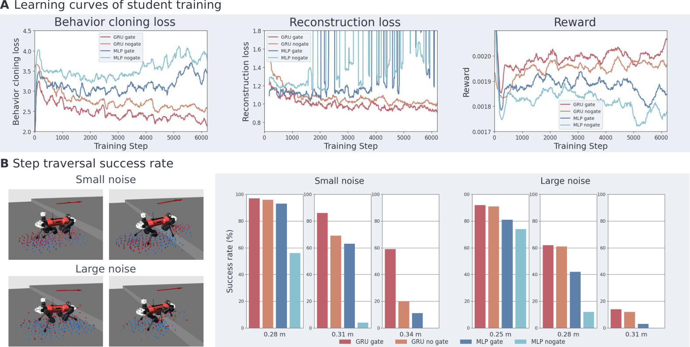

论文信息
- 题目：Learning Robust Perceptive Locomotion for Quadrupedal Robots in the Wild
- 作者：Takahiro Miki、Joonho Lee、Jemin Hwangbo、Lorenz Wellhausen、Vladlen Koltun、Marco Hutter
- 机构：ETH Zürich、KAIST、Intel
- 期刊：Science Robotics, Vol. 7, Issue 62, eabk2822, 2022
- 论文：arXiv:2201.08117
- DOI：10.1126/scirobotics.abk2822
- 作者项目页：Robust Perceptive Locomotion
- 实验平台：ANYmal-C
- 关键词：Teacher–Student、Belief State、GRU、Attention Gate、Elevation Map、Graceful Degradation、Sim-to-Real
一句话结论
这篇论文的核心不是让机器人永远信任地形图，而是训练一个带记忆和 attention gate 的 belief encoder：外部感知可靠时用它提前抬脚、调整姿态并高速通过；遇到雪、植被、透明障碍、反光、遮挡或里程计漂移时，则用本体历史修正错误地形信念，并平滑退化为盲走。
最简流程：
仿真真值地形 + 接触/摩擦/外力 |

原论文图 2：ANYmal 走完 2.2 km、累计爬升 120 m、最大坡度 38% 的 Etzel 山环线。除重新固定脱落的脚套和更换电池外，无人工干预且零跌倒。图片来源：Miki et al., 2022。
1. 论文要解决的核心矛盾
外部感知和本体感知各自解决不同问题。
| 信息 | 优点 | 根本缺点 |
|---|---|---|
| Exteroception（深度相机/LiDAR/高程图） | 在接触前看到台阶、沟壑和坡度 | 会缺失、漂移、遮挡，也不知道表面是否可支撑 |
| Proprioception（关节、IMU、身体响应） | 稳定、可靠，能感知真实接触和滑动 | 只能在碰到地形后反应 |
只用本体感知的 2020 方法非常稳，但面对高台阶时必须先撞上去，再用 foot-trapping reflex 重新抬脚。这限制了速度和动作的平滑性。
反过来，如果策略无条件信任 elevation map，那么一块海绵、透明亚克力、雪或一次里程计漂移就可能造成灾难。
因此真正的问题是：
如何让策略在没有手写规则的情况下，自己判断“现在应该信相机，还是信脚下的物理反馈”？
2. 这篇论文相对 2020 Blind Locomotion 改了什么
2020 工作已经建立了一个重要基线：Teacher 看特权信息，Student 用本体历史重建 Teacher latent。
2022 工作在此基础上加入了三个关键元素：
- Student 还接收脚周围的高度采样；
- 用 GRU 维护跨时间的 belief state；
- 用 attention gate 决定外部感知应该直接注入多少。
它的目标不是用视觉取代盲走策略，而是：
可靠 exteroception → 预见地形，快速且平滑 |
3. Teacher–Student 训练总览

原论文图 6（核心方法图）：Teacher 在仿真中读取真实环境状态；Student 从噪声高度采样和本体观测中同时模仿动作并重建环境 latent；真机只部署 Student。图片来源：Miki et al., 2022。
3.1 Teacher 看到的信息
Teacher 的状态包括：
- 可部署的本体观测；
- 真值高度采样；
- 足端接触状态、接触力与法向；
- 每只脚的摩擦系数；
- 大腿和小腿是否碰撞；
- 施加在机身上的外力与外力矩；
- 每条腿的 airtime。
Teacher 用 PPO 训练。由于它直接看到环境真值，不必同时解决“从噪声中猜地形”和“学会走路”两个难题。
3.2 Student 的两个监督目标
Student 不只模仿 Teacher action，还要重建 Teacher 的特权 latent。可概括为：
动作损失告诉 Student “怎么动”，latent 损失则告诉它“应该如何理解当前环境”。
4. 策略究竟看到什么
4.1 Proprioception
| 输入 | 维度 |
|---|---|
| 速度命令 | 3 |
| 机身姿态 | 3 |
| 机身速度 | 6 |
| 关节位置 / 速度 | 12 + 12 |
| 关节位置历史（3 帧） | 36 |
| 关节速度历史（2 帧） | 24 |
| 关节目标历史（2 帧） | 24 |
| CPG 相位信息 | 13 |
4.2 Exteroception：208 个脚周围高度点
论文不把整张 elevation map 直接输入网络，而是在每只脚周围用 5 个同心圆采样：
| 半径 | 0.08 m | 0.16 m | 0.26 m | 0.36 m | 0.48 m |
|---|---|---|---|---|---|
| 采样点数 | 6 | 8 | 10 | 12 | 16 |
每只脚 52 点，四条腿合计 208 点。这个表示有三个工程优点：
- 输入直接围绕落脚和抬脚问题；
- 不依赖固定的相机或 LiDAR；
- 维度远小于完整地图。
代价是丢失原始点云中的外观、材质、纹理与真正 3D 结构。
5. Belief encoder：不是滤波一张图，而是估计可用于控制的环境状态
Student 先将每只脚的高度采样编码成 24 维，四只脚合计 96 维 exteroceptive latent：
再用两层、每层 50 hidden units 的 GRU 整合历史，形成 120 维 belief state：
这个 belief 要同时表示：
- 地形高度；
- 接触与地面法向；
- 摩擦和外部扰动；
- 外部感知的可信程度。
关键点是：belief 不等于 elevation map 的去噪结果。 它是一个为动作决策服务的隐状态，可以融合地图、关节反应、机身滑动和过去记忆。
6. Attention gate 是整篇论文最关键的结构
如果只有 GRU，网络必须把所有当前地形细节缓慢压入 hidden state，可能损失精确高度。因此论文加了一条从当前 exteroceptive latent 到 belief 的 gated skip connection：
可以把 理解为 96 个连续的“信任旋钮”：
- 地图干净时，gate 打开，保留精确、当前的地形细节；
- 地图噪声很大时，gate 关闭，策略更依赖 GRU 记忆和本体感知；
- 不需要手写“点云少于 N 就切换 blind mode”之类阈值。
这不是高层的二选一 mode switch，而是在 latent 通道级别连续调整信任。
7. 高度图会怎样骗过机器人

原论文图 3：红点是输入策略的高度采样。反光金属、雪、低垂树枝、植被、深雪、里程计漂移和遮挡都会让 elevation map 缺失或提供错误几何。图片来源：Miki et al., 2022。
7.1 传感器失效
- 反光金属地面产生大量 depth outlier，地图上像一条沟；
- 雪反射率高且缺少纹理，双目相机可能得到空地图；
- 黑暗、烟尘、水面、透明材料也会产生类似问题。
7.2 2.5D 表示失效
Elevation map 每个 只能存一个高度，因此无法同时表示地面和上方树枝。低垂树枝或天花板可能被投影成一堵高墙。
7.3 几何正确，物理意义错误
相机看见的植被、海绵或雪面可能在几何上是“平面”，但脚落下去会下陷。纯视觉几何无法回答“这个表面能否承重”。
7.4 位姿估计导致地图失效
湿滑或可变形表面破坏了足式里程计的稳定支撑假设。位姿漂移后，连续点云被错误拼接，地图也随之扭曲。
8. 高度噪声不是单一 Gaussian noise

原论文图 7：训练中对采样点、单脚和整段 episode 分别注入噪声，并用带外感知 gate 的 GRU 形成 belief。图片来源：Miki et al., 2022。
对脚 附近采样点 ，训练输入大致为：
这里有四个尺度：
- Per-point / per-step noise：模拟局部深度抖动；
- Per-foot / per-step noise：一只脚周围整块地图同时偏移；
- Per-foot / per-episode offset：模拟持续的地图注册误差；
- Intermittent outlier：模拟偶发的大幅错测。
训练轨迹会在 nominal、offset 和 noisy 三种条件间随机切换，概率分别为 60%、30%和 10%。噪声大小还随 Student curriculum 逐步增加。
这种分层噪声比“每个点独立加白噪声”更接近真实建图故障，因为真实错误往往具有空间相关性和时间持续性。
9. 动作空间仍然带有步态先验
策略不直接输出 12 个力矩，而是输出：
- ：每条腿的相位偏移，共 4 维；
- ：每个关节的位置残差，共 12 维。
标称足端轨迹 用三次 Hermite spline 生成抬脚和落脚轨迹，再通过解析逆运动学转成关节目标：
这提高了样本效率和真机稳定性，但也意味着它不是完全无先验的 end-to-end torque policy。
10. Reward 的设计思路
总体上包含：
- 水平速度与 yaw 速度跟踪；
- 惩罚与命令正交的速度；
- 限制机身垂向速度、roll/pitch 角速度；
- 足端 clearance；
- 大腿、小腿和膝部碰撞；
- 关节速度、加速度和软限位；
- 动作一阶/二阶平滑性；
- 力矩和支撑脚滑动。
一个很有意思的细节是 foot-clearance reward 直接使用脚周围高度采样。这让 exteroception 不只是网络输入，还与动作目标建立明确联系：前方地形更高时应该提前抬脚，但平地上不要无谓高抬。
11. 三个最说明 belief 如何工作的实验

原论文图 5：红点是 elevation map 输入，蓝点是从策略内部 belief 解码出的地形。它展示策略如何利用接触反馈推翻错误视觉，以及传感器完全遮挡时如何退化为本体感知运动。图片来源：Miki et al., 2022。
11.1 看得见但踩不住：海绵块
Elevation map 把海绵当成实心高台，策略因此预先抬脚。但脚落下后海绵无法支撑，本体反馈与预期不一致。belief 随即把对地形高度的估计向下修正，而且足端离开后仍保留这个记忆。
11.2 看不见但确实存在：透明亚克力
传感器把透明台阶当成平地。机器人先按平地走，碰到后 belief 把地形估计向上修正，并切换为跨越动作。
海绵和透明障碍构成一组对称实验：
海绵：视觉说“有”，身体说“没有支撑” |
11.3 完全盖住传感器
作者物理遮住传感器，策略收到随机噪声地图。机器人无法再提前预测楼梯，前脚会撞到立面，下台阶时也会较重地落脚；但它依然能通过身体响应修正 belief，完成上下楼梯而不跌倒。
这正是 graceful degradation：性能变差，但系统不灾难性失效。
12. Exteroception 实际带来了多大收益

原论文图 4：感知策略和 2020 纯本体感知基线在高台阶、障碍路线和速度上的对比。图片来源：Miki et al., 2022。
12.1 高台阶
- 纯本体基线从 20 cm 左右开始明显失败；
- 本文策略可靠跨越最高 30.5 cm 的台阶；
- 接近 32 cm 以上时，策略会犹豫或侧向避开，而不是盲目冲撞。
收益来自接触前适应：前脚提前抬高，机身前倾，为后腿腾出跨越空间。
12.2 速度
| 指标 | 本文 | 纯本体基线 |
|---|---|---|
| 平地前进/横向速度 | 1.2 m/s | 0.6 m/s |
| 转向角速度 | 3 rad/s | 0.6 rad/s |
| 20 cm 障碍上的速度 | 无明显减速 | 被障碍卡住 |
外部感知的最大价值不只是“走过之前走不过的地形”，更是把反应式运动变成预测式运动，从而在安全的同时提高速度。
13. Attention gate 和 GRU 的消融怎么读

原论文补充图 S2：GRU 在特权信息重建和跨台阶成功率上优于 MLP；对 GRU 和 MLP，加入 attention gate 都能进一步提升结果。图片来源：Miki et al., 2022。
作者比较了四组结构：
- GRU + gate（本文）；
- GRU without gate；
- MLP + gate；
- MLP without gate。
结论是：
- GRU 比 MLP 好，说明不能只靠单帧判断地形可信度；
- 对 GRU 和 MLP，gate 都能改善表现；
- 小噪声时，有 gate 与无 gate 的差异更明显，因为可靠 exteroception 值得通过 skip connection 充分利用；
- 大噪声时，两者差距缩小，表明 gate 关闭后结构会趋近本体感知模型，没有牺牲 blind robustness。
因此 gate 的意义不是“噪声大时还能硬用视觉”，而是“视觉可靠时别浪费，不可靠时也别被它害死”。
14. Sim-to-Real 的关键工程选择
14.1 不把传感器绑死在 policy 里
真机管线先将 LiDAR 或主动双目点云融合成 robot-centric elevation map，再采样 208 个高度点。因此作者可以在不重新训练、不微调的情况下更换外感知传感器。
14.2 随机化的不只是机器人动力学
训练同时覆盖：
- 地形形状和难度课程；
- 摩擦、外力和接触变化；
- 高度采样的局部噪声、整脚偏差、episode 偏差和 outlier；
- 从轻噪声到严重失真的学生课程。
14.3 真机控制链保留了经验先验
它仍使用状态估计、elevation mapping、CPG/FTG、逆运动学、位置目标和底层关节控制。学习策略处于这条工程链中，而不是从原始像素直接到电机力矩。
15. 真实部署的含金量
15.1 Etzel 山长时间徒步
- 路程 2.2 km；
- 爬升 120 m；
- 最大坡度 38%；
- 31 分钟到达山顶，快于路标给出的人类 35 分钟；
- 全程 78 分钟，与徒步规划器的 76 分钟基本一致；
- 无跌倒。
这比短时障碍演示更能证明 robustness，因为长时间部署会累积位姿漂移、地图误差、温度、电量和机械扰动。
15.2 DARPA Subterranean Challenge
该控制器作为 CERBERUS 队的默认 locomotion controller，支持 4 台 ANYmal 在 tunnel、urban 和 cave 三类场地中自主探索超过 1700 m，没有一次跌倒。
环境同时包含烟尘、雾、水、低光、碎石和复杂楼梯，这正是传感器和地图最容易失效的场景。
16. 这篇论文的局限
16.1 Elevation map 是 2.5D 瓶颈
它无法正确表示悬空物、洞穴和同一 上的多层结构，也丢失材质与纹理。
16.2 它只隐式使用不确定性
Belief 会学会降低对外感知的信任，但系统没有显式输出一个校准的 uncertainty。遇到狭窄悬崖或踏石后方遮挡区域时，策略可能错误假设地面连续并踩空。
16.3 建图和位姿估计不是端到端学习
经典模块完成点云配准与 elevation map 构建，policy 无法反向调整这些模块。优点是可解释、传感器无关；缺点是前端丢掉的信息后端无法恢复。
16.4 能够鲁棒行走，不等于能完成极端敏捷技能
策略仍然围绕周期步态和局部速度命令构建。需要跳跃、攀爬、低姿钻越或复杂技能组合的任务，还需要后续 ANYmal Parkour 和 Parkour in the Wild 等工作。
17. 与前后三篇工作的关系
| 工作 | 外部感知 | 核心能力 | 主要代价 |
|---|---|---|---|
| 2020 Challenging Terrain | 无 | 本体历史推断地形，高鲁棒性 | 只能接触后反应，速度受限 |
| 2022 Robust Perceptive Locomotion | elevation map 高度采样 | attention belief 在外感知与本体感知之间平滑切换 | 2.5D 地图丢失材质和悬空结构 |
| 2025/2026 Parkour in the Wild | 多相机深度图 | 多专家蒸馏、RL 微调、多技能和 active perception | 训练复杂，深度 Sim-to-Real 难 |
从研究演化看，2022 工作完成了最关键的中间一步：它证明给一个鲁棒的 proprioceptive controller 加入视觉，不必然要牺牲安全性；关键是让融合机制学会什么时候不应该信视觉。
18. 如果我要复现，建议怎么拆
Step 1：先复现纯本体 locomotion
不要一开始就加 elevation map。先确保机器人在平地、坡地和小台阶上能靠本体反馈稳定行走。
Step 2：训练 privileged Teacher
先给 Teacher 真值高度点、接触、摩擦和外力，验证它是否能提前抬脚、前倾机身并稳定通过大台阶。
Step 3：实现多尺度高度采样
先使用仿真真值 height field，将每只脚附近的同心圆采样变换到正确机器人坐标系，再单独测试回转、坡地和跨台阶时采样点是否与脚保持一致。
Step 4：先做 GRU belief，再加 gate
保留四组消融：MLP/GRU × gate/no gate。如果只看最终 reward，很难判断 belief 是否真正学到可信度；应同时解码地形、接触和摩擦。
Step 5：从结构化噪声开始
依次加入：
per-point jitter |
每次只加一类，观察 gate、动作误差和 privileged reconstruction 如何变化。
Step 6：专门做矛盾信息测试
不要只测随机噪声。至少包含：
- 输入说有台阶，但物理上是可压缩表面；
- 输入说是平地，但物理上有障碍；
- 整张地图持续漂移；
- 中途完全丢失 exteroception；
- 地图恢复后，策略能否重新使用它。
19. 最容易误读的地方
误读 1：Attention gate 就是一个视觉开关
它是 96 维 latent 通道级别的连续权重，不是单一 Boolean mode。
误读 2：解码出的蓝色地形就是策略内部显式地图
解码器只是训练后的分析工具。Belief latent 不必以可解释地图的形式存储信息。
误读 3：有了视觉就不需要碰撞反射
透明、柔软、反光和遮挡地形仍必须靠物理接触消除歧义。本文的价值是把预测与反射结合，而不是消灭反射。
误读 4：这是 raw depth end-to-end policy
它使用经过状态估计和 elevation mapping 得到的 208 个高度采样，不是原始深度图。
误读 5：零跌倒意味着对所有地形都有保证
零跌倒是作者报告的部署结果，不是形式化安全证明。论文也明确讨论了悬崖遮挡、踏石和超出运动技能范围的失败边界。
20. 我认为最值得记住的三点
20.1 Robust perception 不是把传感器做到永远正确
真实世界中不存在永不失效的深度传感器和地图。更实际的目标是让控制器识别它们什么时候不可信，并在信息不足时保持稳定。
20.2 身体是对视觉的最终校验器
视觉提供接触前预测，物理交互提供接触后真值。海绵与透明障碍实验说明，稳健智能需要在这两者之间持续校正。
20.3 Graceful degradation 比平均性能更关键
感知正常时走得快是性能；感知完全失效时只是走得慢、动作变笨，却不会直接跌倒，才是可部署性。
21. 最终评价
这篇论文的价值不在于某个新的 RL 优化器，而在于它给出了一个非常清晰的安全融合原则：
外部感知负责“提前知道” |
与纯盲走相比，它走得更快、更平滑，能提前处理高台阶；与纯视觉相比，它可以在雪、反光、植被、透明物和传感器完全遮挡时继续行走。
它对后续感知运动工作的最大启发是：感知融合不是把多个传感器特征拼接起来，而是学会在不同证据之间分配信任。